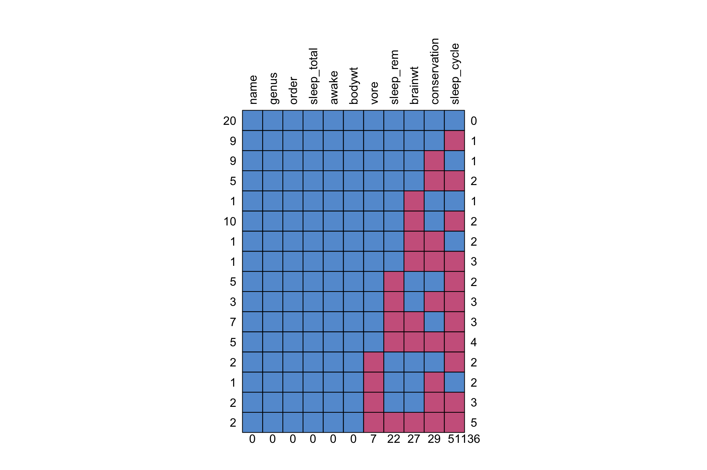

here::here("code", "_common.R") |> source()
# Load packages
if (!requireNamespace("pacman")) install.packages("pacman")
pacman::p_load(tidyr, mice, missForest)14 Data wrangling
Prerequisiti
- Leggere R for Data Science (2e).
- Consultare Data cleaning for social scientists.
Concetti e competenze chiave
Preparazione del Notebook
14.1 Introduzione
L’obiettivo di questo capitolo è fornire un’introduzione alle funzioni principali del linguaggio R per le operazioni di data wrangling, cioè per il preprocessing e la pulizia dei dati. In R, queste operazioni sono strettamente legate al concetto di “data tidying”, che si riferisce all’organizzazione sistematica dei dati per facilitare l’analisi.
Per comprendere meglio il concetto di “data tidying”, possiamo rifarci a una citazione tratta dal testo di riferimento R for Data Science (2e):
“Happy families are all alike; every unhappy family is unhappy in its own way.”
— Leo Tolstoy
“Tidy datasets are all alike, but every messy dataset is messy in its own way.”
— Hadley Wickham
L’essenza del “data tidying” è organizzare i dati in un formato che sia facile da gestire e analizzare. Anche se gli stessi dati possono essere rappresentati in vari modi, non tutte le rappresentazioni sono ugualmente efficienti o facili da usare. Un dataset “tidy” segue tre principi fondamentali che lo rendono particolarmente pratico:
- Ogni variabile è una colonna: ogni colonna nel dataset rappresenta una singola variabile.
- Ogni osservazione è una riga: ogni riga nel dataset rappresenta un’unica osservazione.
- Ogni valore è una cella: ogni cella del dataset contiene un singolo valore.
I pacchetti R come dplyr, ggplot2 e gli altri pacchetti del tidyverse sono progettati specificamente per lavorare con dati in formato “tidy”, permettendo agli utenti di eseguire operazioni di manipolazione e visualizzazione in modo più intuitivo ed efficiente.
14.2 Pipe
Sia il pacchetto tidyr che il pacchetto dplyr utilizzano l’operatore pipe, che in R può essere rappresentato da due notazioni principali: |> (introdotto nativamente in R a partire dalla versione 4.1.0) e %>% (introdotto dal pacchetto magrittr, ampiamente utilizzato in tidyverse). Entrambi gli operatori permettono di concatenare in modo efficiente una serie di operazioni, ma presentano alcune differenze che meritano attenzione.
14.2.1 Cosa Fa la Pipe?
La pipe è uno strumento potente che permette di collegare in modo diretto l’output di una funzione come input della funzione successiva. Questo approccio:
- Riduce la necessità di creare variabili intermedie.
- Migliora la leggibilità del codice.
- Rende il flusso delle operazioni più chiaro e lineare.
Ogni funzione applicata con la pipe riceve automaticamente l’output della funzione precedente come suo primo argomento. Ciò consente di scrivere sequenze di operazioni in un formato compatto e intuitivo.
Ecco un esempio pratico:
# Utilizzo della pipe per trasformare un dataset
library(dplyr)
df <- data.frame(
id = 1:5,
value = c(10, 20, 30, 40, 50)
)
# Filtra i dati, seleziona colonne e calcola nuovi valori
df_clean <- df |>
dplyr::filter(value > 20) |>
dplyr::select(id, value) |>
mutate(squared_value = value^2)In questa sequenza, il dataset originale df viene filtrato, le colonne desiderate vengono selezionate e viene aggiunta una nuova colonna con il valore al quadrato.
head(df_clean)
#> id value squared_value
#> 1 3 30 900
#> 2 4 40 1600
#> 3 5 50 2500In sintesi, la pipe è uno strumento fondamentale per scrivere codice R moderno e leggibile, indipendentemente dal fatto che si utilizzi |> o %>%.
14.3 Verbi
Le funzioni principali (“verbi) di dplyr sono le seguenti:
| Verbo dplyr | Descrizione |
|---|---|
select() |
Seleziona colonne |
filter() |
Filtra righe |
arrange() |
Riordina o organizza le righe |
mutate() |
Crea nuove colonne |
summarise() |
Riassume i valori |
group_by() |
Consente di eseguire operazioni di gruppo |
I verbi di dplyr sono suddivisi in quattro gruppi, in base all’elemento su cui operano: righe, colonne, gruppi o tabelle.
Inoltre, le diverse funzioni bind_ e _joins permettono di combinare più tibbles (ovvero, data frame) in uno solo.
Per introdurre il processo di “data tidying”, in questo tutorial utilizzeremo il dataset msleep.
data(msleep)
dim(msleep)
#> [1] 83 11Esaminiamo i dati:
glimpse(msleep)
#> Rows: 83
#> Columns: 11
#> $ name <chr> "Cheetah", "Owl monkey", "Mountain beaver", "Greater s…
#> $ genus <chr> "Acinonyx", "Aotus", "Aplodontia", "Blarina", "Bos", "…
#> $ vore <chr> "carni", "omni", "herbi", "omni", "herbi", "herbi", "c…
#> $ order <chr> "Carnivora", "Primates", "Rodentia", "Soricomorpha", "…
#> $ conservation <chr> "lc", NA, "nt", "lc", "domesticated", NA, "vu", NA, "d…
#> $ sleep_total <dbl> 12.1, 17.0, 14.4, 14.9, 4.0, 14.4, 8.7, 7.0, 10.1, 3.0…
#> $ sleep_rem <dbl> NA, 1.8, 2.4, 2.3, 0.7, 2.2, 1.4, NA, 2.9, NA, 0.6, 0.…
#> $ sleep_cycle <dbl> NA, NA, NA, 0.1333333, 0.6666667, 0.7666667, 0.3833333…
#> $ awake <dbl> 11.9, 7.0, 9.6, 9.1, 20.0, 9.6, 15.3, 17.0, 13.9, 21.0…
#> $ brainwt <dbl> NA, 0.01550, NA, 0.00029, 0.42300, NA, NA, NA, 0.07000…
#> $ bodywt <dbl> 50.000, 0.480, 1.350, 0.019, 600.000, 3.850, 20.490, 0…Le colonne, nell’ordine, corrispondono a quanto segue:
| Nome colonna | Descrizione |
|---|---|
| name | Nome comune |
| genus | Rango tassonomico |
| vore | Carnivoro, onnivoro o erbivoro? |
| order | Rango tassonomico |
| conservation | Stato di conservazione del mammifero |
| sleep_total | Quantità totale di sonno, in ore |
| sleep_rem | Sonno REM, in ore |
| sleep_cycle | Durata del ciclo di sonno, in ore |
| awake | Quantità di tempo trascorso sveglio, in ore |
| brainwt | Peso del cervello, in chilogrammi |
| bodywt | Peso corporeo, in chilogrammi |
14.4 Righe
I verbi più importanti che operano sulle righe di un dataset sono filter(), che seleziona le righe da includere senza modificarne l’ordine, e arrange(), che cambia l’ordine delle righe senza alterare la selezione delle righe presenti.
msleep |>
dplyr::filter(sleep_total < 4) |>
arrange(sleep_total)
#> # A tibble: 9 × 11
#> name genus vore order conservation sleep_total
#> <chr> <chr> <chr> <chr> <chr> <dbl>
#> 1 Giraffe Giraffa herbi Artiodactyla cd 1.9
#> 2 Pilot whale Globicephalus carni Cetacea cd 2.7
#> 3 Horse Equus herbi Perissodactyla domesticated 2.9
#> 4 Roe deer Capreolus herbi Artiodactyla lc 3
#> 5 Donkey Equus herbi Perissodactyla domesticated 3.1
#> 6 African elepha… Loxodonta herbi Proboscidea vu 3.3
#> # ℹ 3 more rows
#> # ℹ 5 more variables: sleep_rem <dbl>, sleep_cycle <dbl>, awake <dbl>, …Possiamo usare filter() speficicano più di una condizione logica.
msleep |>
dplyr::filter((sleep_total < 4 & bodywt > 100) | brainwt > 1) |>
arrange(sleep_total)
#> # A tibble: 7 × 11
#> name genus vore order conservation sleep_total
#> <chr> <chr> <chr> <chr> <chr> <dbl>
#> 1 Giraffe Giraffa herbi Artiodactyla cd 1.9
#> 2 Pilot whale Globicephalus carni Cetacea cd 2.7
#> 3 Horse Equus herbi Perissodactyla domesticated 2.9
#> 4 Donkey Equus herbi Perissodactyla domesticated 3.1
#> 5 African elepha… Loxodonta herbi Proboscidea vu 3.3
#> 6 Asian elephant Elephas herbi Proboscidea en 3.9
#> # ℹ 1 more row
#> # ℹ 5 more variables: sleep_rem <dbl>, sleep_cycle <dbl>, awake <dbl>, …14.5 Colonne
Esistono quattro verbi principali che modificano le colonne di un dataset senza cambiare le righe:
relocate()cambia la posizione delle colonne;rename()modifica i nomi delle colonne;select()seleziona le colonne da includere o escludere;mutate()crea nuove colonne a partire da quelle esistenti.
msleep2 <- msleep |>
mutate(
rem_prop = sleep_rem / sleep_total * 100
) |>
dplyr::select(name, vore, rem_prop, sleep_total) |>
arrange(desc(rem_prop))
glimpse(msleep2)
#> Rows: 83
#> Columns: 4
#> $ name <chr> "European hedgehog", "Thick-tailed opposum", "Giant arm…
#> $ vore <chr> "omni", "carni", "insecti", "omni", "carni", "omni", "o…
#> $ rem_prop <dbl> 34.65347, 34.02062, 33.70166, 29.21348, 28.71287, 27.22…
#> $ sleep_total <dbl> 10.1, 19.4, 18.1, 8.9, 10.1, 18.0, 9.1, 10.3, 12.5, 8.4…In questo esempio, utilizziamo mutate() per creare una nuova colonna rem_prop che rappresenta la percentuale di sonno REM sul totale del sonno. Successivamente, select() viene utilizzato per scegliere solo alcune colonne del dataset, e infine desc(rem_prop) ordina i valori di rem_prop in ordine decrescente, dal valore maggiore a quello minore.
Per cambiare il nome di una colonna possiamo usare rename(). Inoltre, possiamo cambiare l’ordine delle variabili con relocate().
msleep2 |>
rename(rem_perc = rem_prop) |>
relocate(rem_perc, .before = name)
#> # A tibble: 83 × 4
#> rem_perc name vore sleep_total
#> <dbl> <chr> <chr> <dbl>
#> 1 34.7 European hedgehog omni 10.1
#> 2 34.0 Thick-tailed opposum carni 19.4
#> 3 33.7 Giant armadillo insecti 18.1
#> 4 29.2 Tree shrew omni 8.9
#> 5 28.7 Dog carni 10.1
#> 6 27.2 North American Opossum omni 18
#> # ℹ 77 more rows14.6 Gruppi
Il verbo group_by() viene utilizzato per suddividere un dataset in gruppi, in base a una o più variabili, che siano rilevanti per l’analisi. Questo permette di eseguire operazioni di sintesi su ciascun gruppo separatamente, ottenendo informazioni aggregate.
Ad esempio, nel codice seguente:
msleep |>
group_by(order) |>
summarise(
avg_sleep = mean(sleep_total),
min_sleep = min(sleep_total),
max_sleep = max(sleep_total),
total = n()
) |>
arrange(desc(avg_sleep))
#> # A tibble: 19 × 5
#> order avg_sleep min_sleep max_sleep total
#> <chr> <dbl> <dbl> <dbl> <int>
#> 1 Chiroptera 19.8 19.7 19.9 2
#> 2 Didelphimorphia 18.7 18 19.4 2
#> 3 Cingulata 17.8 17.4 18.1 2
#> 4 Afrosoricida 15.6 15.6 15.6 1
#> 5 Pilosa 14.4 14.4 14.4 1
#> 6 Rodentia 12.5 7 16.6 22
#> # ℹ 13 more rowsgroup_by(order)suddivide il datasetmsleepin gruppi, ciascuno corrispondente a un valore distinto della variabileorder.Successivamente,
summarise()calcola diverse statistiche per ogni gruppo:avg_sleepè la media del totale del sonno (sleep_total) all’interno di ciascun gruppo.min_sleepè il valore minimo disleep_totalin ogni gruppo.max_sleepè il valore massimo disleep_totalin ogni gruppo.totalè il numero di osservazioni (o righe) per ciascun gruppo, calcolato con la funzionen().
Infine,
arrange(desc(avg_sleep))ordina i risultati in ordine decrescente in base alla media del sonno totale (avg_sleep), mostrando prima i gruppi con la media di sonno più alta.
Questo tipo di approccio è utile quando si vuole analizzare come cambiano le caratteristiche dei dati a seconda dei gruppi specifici, fornendo una visione più dettagliata e significativa.
14.7 Dati mancanti
Nel dataset ci sono celle che contengono valori mancanti, indicati come NA. Questi rappresentano misurazioni per le quali i dati non sono stati registrati.
Per ottenere una panoramica dei dati, inclusi i valori mancanti, possiamo utilizzare il comando:
summary(msleep)
#> name genus vore order
#> Length:83 Length:83 Length:83 Length:83
#> Class :character Class :character Class :character Class :character
#> Mode :character Mode :character Mode :character Mode :character
#>
#>
#>
#>
#> conservation sleep_total sleep_rem sleep_cycle
#> Length:83 Min. : 1.90 Min. :0.100 Min. :0.1167
#> Class :character 1st Qu.: 7.85 1st Qu.:0.900 1st Qu.:0.1833
#> Mode :character Median :10.10 Median :1.500 Median :0.3333
#> Mean :10.43 Mean :1.875 Mean :0.4396
#> 3rd Qu.:13.75 3rd Qu.:2.400 3rd Qu.:0.5792
#> Max. :19.90 Max. :6.600 Max. :1.5000
#> NA's :22 NA's :51
#> awake brainwt bodywt
#> Min. : 4.10 Min. :0.00014 Min. : 0.005
#> 1st Qu.:10.25 1st Qu.:0.00290 1st Qu.: 0.174
#> Median :13.90 Median :0.01240 Median : 1.670
#> Mean :13.57 Mean :0.28158 Mean : 166.136
#> 3rd Qu.:16.15 3rd Qu.:0.12550 3rd Qu.: 41.750
#> Max. :22.10 Max. :5.71200 Max. :6654.000
#> NA's :27Per visualizzare il pattern di dati mancanti, ovvero come la mancanza di una variabile possa influenzare la mancanza di altre, si può usare:
md.pattern(msleep, rotate.names = TRUE)
#> name genus order sleep_total awake bodywt vore sleep_rem brainwt
#> 20 1 1 1 1 1 1 1 1 1
#> 9 1 1 1 1 1 1 1 1 1
#> 9 1 1 1 1 1 1 1 1 1
#> 5 1 1 1 1 1 1 1 1 1
#> 1 1 1 1 1 1 1 1 1 0
#> 10 1 1 1 1 1 1 1 1 0
#> 1 1 1 1 1 1 1 1 1 0
#> 1 1 1 1 1 1 1 1 1 0
#> 5 1 1 1 1 1 1 1 0 1
#> 3 1 1 1 1 1 1 1 0 1
#> 7 1 1 1 1 1 1 1 0 0
#> 5 1 1 1 1 1 1 1 0 0
#> 2 1 1 1 1 1 1 0 1 1
#> 1 1 1 1 1 1 1 0 1 1
#> 2 1 1 1 1 1 1 0 1 1
#> 2 1 1 1 1 1 1 0 0 0
#> 0 0 0 0 0 0 7 22 27
#> conservation sleep_cycle
#> 20 1 1 0
#> 9 1 0 1
#> 9 0 1 1
#> 5 0 0 2
#> 1 1 1 1
#> 10 1 0 2
#> 1 0 1 2
#> 1 0 0 3
#> 5 1 0 2
#> 3 0 0 3
#> 7 1 0 3
#> 5 0 0 4
#> 2 1 0 2
#> 1 0 1 2
#> 2 0 0 3
#> 2 0 0 5
#> 29 51 136
Il modo più semplice per gestire i valori mancanti è l’analisi dei casi completi (complete case analysis), che esclude dall’analisi le osservazioni con valori mancanti e utilizza solo quelle con tutte le variabili registrate. Questo approccio può essere implementato come segue:
msleep_comp <- msleep |>
drop_na()
dim(msleep_comp)
#> [1] 20 11Tuttavia, per il dataset in questione, questa strategia non è adeguata, poiché si passa da 83 osservazioni iniziali a solo 20 righe dopo aver eliminato i dati mancanti.
Un approccio più utile è l’utilizzo di metodi di imputazione (imputation methods). Uno di questi è l’imputazione semplice (single imputation, SI), dove il valore mancante viene sostituito dalla media della variabile corrispondente. Questo tipo di imputazione può essere eseguito come segue:
imp <- mice(msleep, method = "mean", m = 1, maxit = 1, print = FALSE)
#> Warning: Number of logged events: 6
complete(imp) |>
summary()
#> name genus vore order
#> Length:83 Length:83 Length:83 Length:83
#> Class :character Class :character Class :character Class :character
#> Mode :character Mode :character Mode :character Mode :character
#>
#>
#>
#> conservation sleep_total sleep_rem sleep_cycle
#> Length:83 Min. : 1.90 Min. :0.100 Min. :0.1167
#> Class :character 1st Qu.: 7.85 1st Qu.:1.150 1st Qu.:0.4167
#> Mode :character Median :10.10 Median :1.875 Median :0.4396
#> Mean :10.43 Mean :1.875 Mean :0.4396
#> 3rd Qu.:13.75 3rd Qu.:2.200 3rd Qu.:0.4396
#> Max. :19.90 Max. :6.600 Max. :1.5000
#> awake brainwt bodywt
#> Min. : 4.10 Min. :0.00014 Min. : 0.005
#> 1st Qu.:10.25 1st Qu.:0.00635 1st Qu.: 0.174
#> Median :13.90 Median :0.11500 Median : 1.670
#> Mean :13.57 Mean :0.28158 Mean : 166.136
#> 3rd Qu.:16.15 3rd Qu.:0.28158 3rd Qu.: 41.750
#> Max. :22.10 Max. :5.71200 Max. :6654.000Tuttavia, uno dei problemi dell’imputazione media è che tende a ridurre la varianza e a rendere le stime dell’errore standard meno accurate, generando bias verso il basso.
Un metodo più sofisticato è l’imputazione multipla (multiple imputation, MI). Questa tecnica genera più imputazioni, creando diversi dataset completi. Per ciascuno di questi dataset, è possibile effettuare l’analisi desiderata e, al termine, combinare i risultati ottenuti dai vari dataset imputati per ottenere un risultato finale più robusto. Un esempio di questa tecnica utilizza il metodo di predictive mean matching (metodo = “pmm”), che sfrutta i valori vicini nei dati come imputazioni:
imp2 <- mice(msleep, method = "pmm", m = 1, maxit = 100, print = FALSE)
#> Warning: Number of logged events: 6
complete(imp2) |>
summary()
#> name genus vore order
#> Length:83 Length:83 Length:83 Length:83
#> Class :character Class :character Class :character Class :character
#> Mode :character Mode :character Mode :character Mode :character
#>
#>
#>
#> conservation sleep_total sleep_rem sleep_cycle
#> Length:83 Min. : 1.90 Min. :0.100 Min. :0.1167
#> Class :character 1st Qu.: 7.85 1st Qu.:0.900 1st Qu.:0.1833
#> Mode :character Median :10.10 Median :1.500 Median :0.3333
#> Mean :10.43 Mean :1.843 Mean :0.4502
#> 3rd Qu.:13.75 3rd Qu.:2.400 3rd Qu.:0.6667
#> Max. :19.90 Max. :6.600 Max. :1.5000
#> awake brainwt bodywt
#> Min. : 4.10 Min. :0.00014 Min. : 0.005
#> 1st Qu.:10.25 1st Qu.:0.00260 1st Qu.: 0.174
#> Median :13.90 Median :0.01210 Median : 1.670
#> Mean :13.57 Mean :0.23634 Mean : 166.136
#> 3rd Qu.:16.15 3rd Qu.:0.13600 3rd Qu.: 41.750
#> Max. :22.10 Max. :5.71200 Max. :6654.000L’imputazione multipla, grazie alla sua capacità di considerare la variabilità tra le diverse imputazioni, fornisce stime più accurate rispetto all’imputazione media semplice, riducendo il rischio di bias e fornendo risultati più affidabili.
14.8 Considerazioni Conclusive
Il data wrangling è una delle fasi più importanti in qualsiasi pipeline di analisi dei dati. In questo capitolo abbiamo introdotto l’uso del pacchetto tidyverse di R per la manipolazione dei dati e il suo utilizzo in scenari di base. Tuttavia, il tidyverse è un ecosistema ampio e qui abbiamo trattato solo gli elementi fondamentali. Per approfondire, si consiglia di consultare ulteriori risorse come quelle disponibili sul sito web del tidyverse e il libro R for Data Science (2e), di cui esiste anche una traduzione italiana.
Informazioni sull’Ambiente di Sviluppo
sessionInfo()
#> R version 4.4.2 (2024-10-31)
#> Platform: aarch64-apple-darwin20
#> Running under: macOS Sequoia 15.1.1
#>
#> Matrix products: default
#> BLAS: /Library/Frameworks/R.framework/Versions/4.4-arm64/Resources/lib/libRblas.0.dylib
#> LAPACK: /Library/Frameworks/R.framework/Versions/4.4-arm64/Resources/lib/libRlapack.dylib; LAPACK version 3.12.0
#>
#> locale:
#> [1] C/UTF-8/C/C/C/C
#>
#> time zone: Europe/Rome
#> tzcode source: internal
#>
#> attached base packages:
#> [1] stats graphics grDevices utils datasets methods base
#>
#> other attached packages:
#> [1] missForest_1.5 mice_3.16.0 MASS_7.3-61 viridis_0.6.5
#> [5] viridisLite_0.4.2 ggpubr_0.6.0 ggExtra_0.10.1 gridExtra_2.3
#> [9] patchwork_1.3.0 bayesplot_1.11.1 psych_2.4.6.26 scales_1.3.0
#> [13] markdown_1.13 knitr_1.49 lubridate_1.9.3 forcats_1.0.0
#> [17] stringr_1.5.1 dplyr_1.1.4 purrr_1.0.2 readr_2.1.5
#> [21] tidyr_1.3.1 tibble_3.2.1 ggplot2_3.5.1 tidyverse_2.0.0
#> [25] rio_1.2.3 here_1.0.1
#>
#> loaded via a namespace (and not attached):
#> [1] mnormt_2.1.1 rlang_1.1.4 magrittr_2.0.3
#> [4] compiler_4.4.2 vctrs_0.6.5 pkgconfig_2.0.3
#> [7] shape_1.4.6.1 fastmap_1.2.0 backports_1.5.0
#> [10] utf8_1.2.4 promises_1.3.1 rmarkdown_2.29
#> [13] tzdb_0.4.0 nloptr_2.1.1 itertools_0.1-3
#> [16] xfun_0.49 glmnet_4.1-8 jomo_2.7-6
#> [19] randomForest_4.7-1.2 jsonlite_1.8.9 later_1.4.0
#> [22] pan_1.9 broom_1.0.7 parallel_4.4.2
#> [25] R6_2.5.1 stringi_1.8.4 car_3.1-3
#> [28] boot_1.3-31 rpart_4.1.23 Rcpp_1.0.13-1
#> [31] iterators_1.0.14 pacman_0.5.1 httpuv_1.6.15
#> [34] Matrix_1.7-1 splines_4.4.2 nnet_7.3-19
#> [37] timechange_0.3.0 tidyselect_1.2.1 abind_1.4-8
#> [40] yaml_2.3.10 codetools_0.2-20 miniUI_0.1.1.1
#> [43] doRNG_1.8.6 lattice_0.22-6 shiny_1.9.1
#> [46] withr_3.0.2 evaluate_1.0.1 survival_3.7-0
#> [49] pillar_1.9.0 carData_3.0-5 rngtools_1.5.2
#> [52] foreach_1.5.2 generics_0.1.3 rprojroot_2.0.4
#> [55] hms_1.1.3 munsell_0.5.1 minqa_1.2.8
#> [58] xtable_1.8-4 glue_1.8.0 tools_4.4.2
#> [61] lme4_1.1-35.5 ggsignif_0.6.4 grid_4.4.2
#> [64] colorspace_2.1-1 nlme_3.1-166 Formula_1.2-5
#> [67] cli_3.6.3 fansi_1.0.6 gtable_0.3.6
#> [70] rstatix_0.7.2 digest_0.6.37 htmlwidgets_1.6.4
#> [73] farver_2.1.2 htmltools_0.5.8.1 lifecycle_1.0.4
#> [76] mitml_0.4-5 mime_0.12